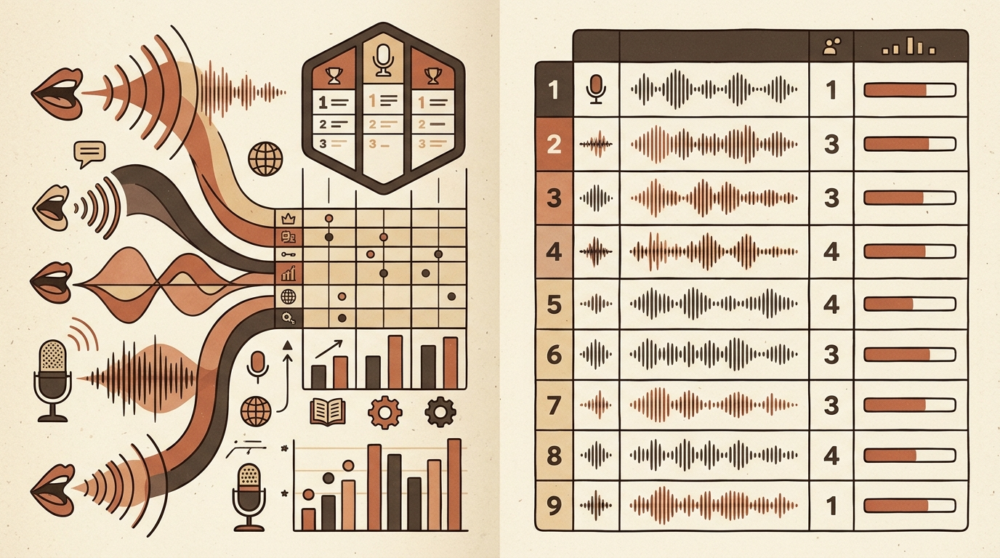
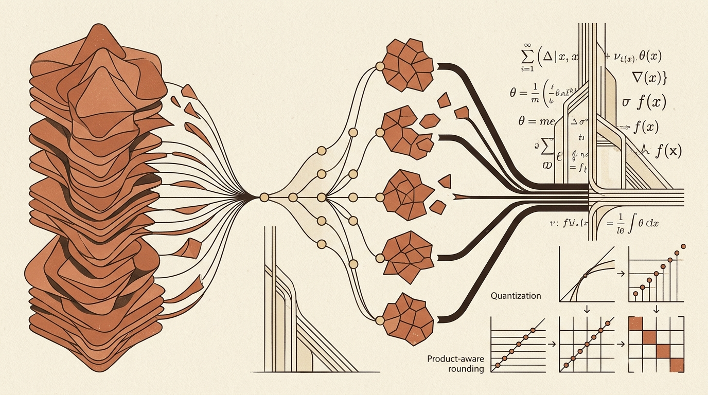

Daily digest
-
Towards Data Science
Refining DAX Filters, Test Automation Specs, and the Role of Insight in Data Science
Technical execution in data engineering and analytics requires careful handling of context, logic, and test specifications. When developing in DAX, building new measures on top of existing nested measures while…
-

Hugging Face Blog
Standardizing Multilingual Text-to-Speech Evaluation with the Open TTS Leaderboard
Hugging Face has introduced the Open TTS Leaderboard to provide standardized, scalable evaluation for text-to-speech (TTS) and voice cloning systems. As speech generation models rapidly expand across diverse languages…
-

arXiv cs.LG
Advances in Model Compression, Physics-Informed Operators, and Generalization Theory
This collection of research focuses heavily on computational efficiency and structured model optimization. For large-scale language models, methods like Orthogonal Matching Pursuit are applied to prune experts in…